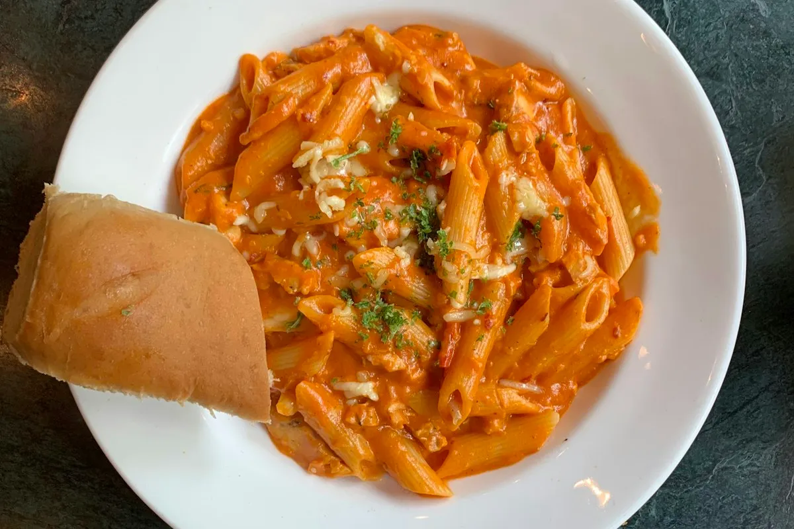

Baked Ziti

Ingredients
- 1 lb ziti pasta
- 1 lb ground Italian sausage or ground beef
- 1 jar (24 oz) marinara sauce
- 15 oz whole milk ricotta cheese
- 1 large egg
- 2 cups shredded mozzarella cheese
- 1/2 cup grated parmesan cheese
- 2 cloves garlic, minced
- 1 tsp dried Italian seasoning
- Fresh basil, for garnish
Instructions
- Preheat oven to 375°F (190°C). Bring a large pot of salted water to a boil and cook the ziti until just shy of al dente (it will finish cooking in the oven). Drain and set aside.
- While the pasta cooks, brown the sausage or beef in a large skillet over medium heat, breaking it up as it cooks. Add the garlic and Italian seasoning and cook for another minute, then stir in the marinara sauce and simmer for 5 minutes.
- In a bowl, mix the ricotta with the egg and half of the parmesan until smooth.
- Combine the cooked pasta with the meat sauce, then layer half of it into a greased 9x13 baking dish. Dollop the ricotta mixture over the top, then cover with the remaining pasta.
- Sprinkle the mozzarella and remaining parmesan evenly over the top. Bake uncovered for 25-30 minutes until bubbling and golden. Let rest for 10 minutes, then garnish with fresh basil and serve.